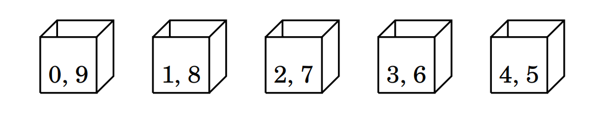
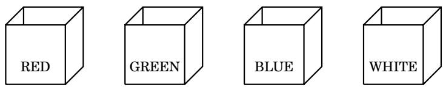
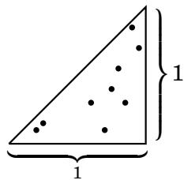
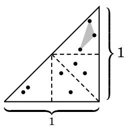
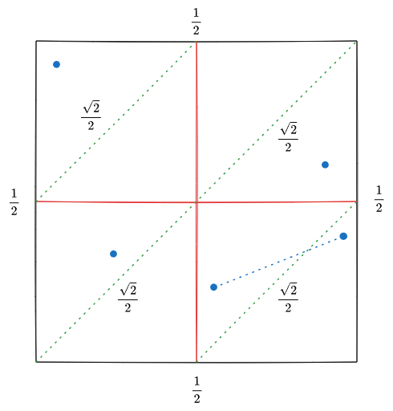
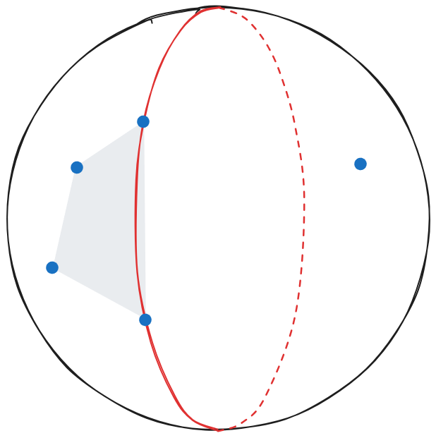

3.9 The Division and Pigeonhole Principles¶
Our final fundamental counting principle is called the division principle. Before discussing it, we need some notation. Given a number \(x\), its floor \(\lfloor x \rfloor\) is \(x\) rounded down to the nearest integer. Thus \(\left\lfloor \dfrac{10}{4} \right\rfloor = 2\), and \(\lfloor 9.31 \rfloor = 9\), and \(\lfloor 7 \rfloor = 7\), etc. The ceiling of \(x\), denoted \(\lceil x \rceil\), is \(x\) rounded up to the nearest integer. Thus \(\left\lceil \dfrac{10}{4} \right\rceil = 3\), and \(\lceil 9.31 \rceil = 10\), and \(\lceil 7 \rceil = 7\).
**The division principle is often illustrated by a simple situation involving pigeons. Imagine \(n\) pigeons that live in \(k\) pigeonholes, or boxes. (Possibly \(n \neq k\).) At night all the pigeons fly into the boxes. When this happens, some of the \(k\) boxes may contain more than one pigeon, and some may be empty. But no matter what, the average number of pigeons per box is \(\dfrac{n}{k}\). Obviously, at least one of the boxes contains \(\dfrac{n}{k}\) or more pigeons. (Because not all the boxes can contain fewer than the average number of pigeons per box.) And because a box must contain a whole number of pigeons, we round up to conclude that at least one box contains \(\left\lceil \dfrac{n}{k} \right\rceil\) or more pigeons. Similarly, at least one box must contain \(\dfrac{n}{k}\) or fewer pigeons, because not all boxes can contain more than the average number of pigeons per box. Rounding down, at least one box contains \(\left\lfloor \dfrac{n}{k} \right\rfloor\) or fewer pigeons. We call this line of reasoning the division principle. (Some texts call it the strong form of the pigeonhole principle.)
Fact 3.9: (Division Principle) Suppose \(n\) objects are placed into \(k\) boxes. Then at least one box contains \(\left\lceil \dfrac{n}{k} \right\rceil\) or more objects, and at least one box contains \(\left\lfloor \dfrac{n}{k} \right\rfloor\) or fewer objects.
This has a useful variant. If \(n > k\), then \(\dfrac{n}{k} > 1\), so \(\left\lceil \dfrac{n}{k} \right\rceil > 1\), and this means some box contains more than one object. On the other hand, if \(n < k\) then \(\dfrac{n}{k} < 1\), so \(\left\lfloor \dfrac{n}{k} \right\rfloor < 1\), meaning at least one box is empty. Thus the division principle yields the following consequence, called the pigeonhole principle.
Fact 3.10: (Pigeonhole Principle) Suppose \(n\) objects are placed into \(k\) boxes. If \(n > k\), then at least one box contains more than one object. If \(n < k\), then at least one box is empty.
The pigeonhole principle is named for the scenario in which \(n\)pigeons fly into \(k\) pigeonholes (or boxes). If there are more pigeons than boxes \((n > k)\) then some box gets more than one pigeon. And if there are fewer pigeons than boxes \((n < k)\) then there must be at least one empty box. Like the multiplication, addition and subtraction principles, the division and pigeonhole principles are intuitive and obvious, but they can prove things that are not obvious. The challenge is seeing where and how to apply them. Our examples will start simple and get progressively more complex.
For an extremely simple application, notice that in any group of 13 people, at least two of them were born on the same month. Although this is obvious, it really does follow from the pigeonhole principle. Think of the 13 people as objects, and put each person in the “box” that is his birth month. As there are more people than boxes (months), at least one box (month) has two or more people in it, meaning at least two of the 13 people were born in the same month. Further, for any group of 100 people, the division principle says that there is a month in which \(\left\lceil \dfrac{100}{12} \right\rceil = 9\) or more of the people were born. It also guarantees a month in which \(\left\lfloor \dfrac{100}{12} \right\rfloor = 8\) or fewer of the people were born.
Example 3.24: Pick six integers between 0 and 9 (inclusive). Show that two of them must add up to 9. For example, suppose you picked \(0, 1, 3, 5, 7\) and \(8\). Then \(1 + 8 = 9\). If you picked \(4, 5, 6, 7, 8, 9\), then \(4 + 5 = 9\). The problem asks us to show that this happens no matter how we pick the numbers.
Solution: Pick six numbers between 0 and 9. Here’s why two of them sum to 9: Imagine five boxes, each marked with two numbers, as shown below. Each box is labeled so that the two numbers written on it sum to 9.
{kind=link}

For each number that was picked, put it in the box having that number written on it. For example, if we picked 7, it goes in the box labeled “2, 7.” (The number 2, if picked, would go in that box too.) In this way we place the six chosen numbers in five boxes. As there are more numbers than boxes, the pigeonhole principle says that some box has more than one (hence two) of the picked numbers in it. Those two numbers sum to 9. Notice that if we picked only five numbers from 0 to 9, then it’s possible that no two sum to 9: we could be unlucky and pick 0, 1, 2, 3, 4. But the pigeonhole principle ensures that if six are picked then two do sum to 9.
Example 3.25: A store has a gumball machine containing a large number of red, green, blue and white gumballs. You get one gumball for each nickel you put into the machine. The store offers the following deal: You agree to buy some number of gumballs, and if 13 or more of them have the same color you get \(\$ 5\). What is the fewest number of gumballs you need to buy to be \(100 \%\) certain that you will make money on the deal?
Solution: Let \(n\) be the number of gumballs that you buy. Imagine sorting your \(n\) gumballs into four boxes labeled RED, GREEN, BLUE, and WHITE. (That is, red balls go in the red box, green balls go in the green box, etc.)
{kind=link}

The division principle says that one box contains \(\left\lceil \dfrac{n}{4} \right\rceil\) or more gumballs. Provided \(\left\lceil \dfrac{n}{4} \right\rceil \geq 13\), you will know you have 13 gumballs of the same color. This happens if \(\dfrac{n}{4} > 12\) (so the ceiling of \(\dfrac{n}{4}\) rounds to a value larger than 12). Therefore you need \(n > 4 \cdot 12 = 48\) , so if \(n = 49\) you know you have at least \(\left\lceil \dfrac{49}{4} \right\rceil = \left\lceil 12.25 \right\rceil = 13\) gumballs of the same color. Answer: Buy 49 gumballs for 49 nickels, which is \(49 \times 0.05 = \$ 2.45\). You get \(\$ 5\), and therefore have made \(\$ 2.55\). Note that if you bought just 48 gumballs, you might win, but there is a chance that you’d get 12 gumballs of each color and miss out on the \(\$ 5\). And if you bought more than 49, you’d still get the \(\$ 5\), but you would have spent more nickels.
Explicitly mentioning the boxes in the above solution is not necessary. Some people prefer to draw a conclusion based on averaging alone. They might solve the problem by letting \(n\) be the number of gumballs bought, so \(n = r + g + b + w\), where \(r\) is the number of them that are red, \(g\) is the number that are green, \(b\) is the number of blues and \(w\) is the number of whites. Then the average number of gumballs of a particular color is \(\dfrac{r+g+b+w}{4} = \dfrac{n}{4}\). We need this to be greater than 12 to ensure 13 of the same color, and the smallest number that does the job is \(n = 49\). This is still the division principle, in a pure form.
Example 3.26: Nine points are randomly placed on the right triangle shown below. Show that three of these points form a triangle whose area is \(\dfrac{1}{8}\) square unit or less. (We allow triangles with zero area, in which case the three points lie on a line.)

Solution: Divide the triangle into four smaller triangles, as indicated by the dashed lines below. Each of these four triangles has an area of \(\dfrac{1}{2} \cdot b \cdot h = \dfrac{1}{2} \cdot \dfrac{1}{2} \cdot \dfrac{1}{2} = \dfrac{1}{8}\) square units. Think of these smaller triangles as “boxes.” So we have placed 9 points in 4 boxes. (If one of the 9 points happens to be on a dashed line, say it belongs to the box below or to its left.)

The division principle says one of the boxes has at least \(\left\lceil \dfrac{9}{4} \right\rceil = 3\) of the points in it. Those three points form a triangle whose area is no larger than the area of the “box” that it is in. Thus these three points form a triangle whose area is \(\dfrac{1}{8}\) or less.
Exercises for Section 3.9¶
Show that if six integers are chosen at random, then at least two of them will have the same remainder when divided by 5.
Answer
Pick six integers \(n_{1}\), \(n_{2}\), \(n_{3}\), \(n_{4}\), \(n_{5}\), and \(n_{6}\) at random. Imagine five boxes, labeled REMAINDER = 0, REMAINDER = 1, REMAINDER = 2, REMAINDER = 3, and REMAINDER = 4. Each of the picked integers has a remainder when divided by 5, and that remainder is always either 0, 1, 2, 3 or 4. For each \(n_{i}\), let \(r_{i}\) be its remainder when divided by 5. Put \(n_{i}\) in the box labeled REMAINDER = \(r_{i}\). We have now put six numbers in five boxes, so by the pigeonhole principle at least one box contains \(\left\lceil \dfrac{6}{5} \right\rceil = 2\) or more of the picked numbers in it. Those two numbers have the same remainder when divided by 5.
Note that when we choose 4 integers at random, then we put 4 numbers in 5 boxes, so by the pigeonhole principle at least one box is empty and contains \(\left\lfloor \dfrac{4}{5} \right\rfloor = 0\) or less of the picked numbers in it.
You deal a pile of cards, face down, from a standard 52-card deck. What is the least number of cards the pile must have before you can be assured that it contains at least five cards of the same suit?
Answer
Let \(n\) be the number of cards you need to deal before you can be assured that it contains at least five cards of the same suit. Imagine sorting the \(n\) cards into four boxes labeled DIAMONDS, HEARTS, SPADES, and CLUBS (one box for each of the 4 suits in a standard 52-card deck). The division principle says that at least one box contains \(\left\lceil \dfrac{n}{4} \right\rceil\) or more cards of the same suit. Provided that \(\left\lceil \dfrac{n}{4} \right\rceil \geq 5\), you will know you have 5 cards of the same suit in the pile. This happens if \(\dfrac{n}{4} > 4\) (so the ceiling of \(\dfrac{n}{4}\) rounds to a value larger than 4). Therefore you need \(n > 4 \cdot 4 = 16\) , so if \(n = 16\) you know you have at least \(\left\lceil \dfrac{16}{4} \right\rceil = \left\lceil 4.0 \right\rceil = 4\) cards of the same suit. Adding just one card so that \(n > 16\), we get \(\left\lceil \dfrac{17}{4} \right\rceil = \left\lceil 4.25 \right\rceil = 5\), so \(n=17\) is the least number of cards a pile must have before you can be assured that it contains at least five cards of the same suit.
Alternatively: to avoid having 5 cards of the same suit for as long as possible, you could have at most: 4 DIAMONDS + 4 HEARTS + 4 SPADES+ 4 CLUBS which totals \(4+4+4+4 = 16\) cards. At this point, it is still possible that no suit has 5 cards. But the next card (the 17th card) must belong to one of the 4 suits, forcing one suit to have at least 5 cards.
What is the fewest number of times you must roll a six-sided dice before you can be assured that 10 or more of the rolls resulted in the same number?
Answer
Imagine six boxes, labeled 1 through 6. Every time you roll a ⚀, put an object in Box 1. Every time you roll a ⚁, put an object in Box 2, etc. After \(n\) rolls, the division principle says that at least one box contains \(\left\lceil \dfrac{n}{6} \right\rceil\) or more objects, and this means you rolled the same number \(\left\lceil \dfrac{n}{6} \right\rceil\) times. We seek the smallest \(n\) for which \(\left\lceil \dfrac{n}{6} \right\rceil \geq 10\). This is the smallest \(n\) for which \(\dfrac{n}{6} > 9\), that is \(n > 9 \cdot 6 = 54\). Thus the answer is \(n = 55\). You need to roll the dice 55 times.
Select any five points on a square whose side-length is one unit. Show that at least two of these points are within \(\displaystyle \frac{\sqrt{2}}{2}\) units of each other.
Answer
Divide the unit square into four congruent subsquares of side length \(\dfrac{1}{2}\). Each subsquare now has diagonal \(\displaystyle \sqrt{\left(\frac12\right)^2+\left(\frac12\right)^2} = \frac{\sqrt2}{2}\). Since 5 points are placed into 4 subsquares, by the pigeonhole principle at least one subsquare contains at least \(\left\lceil \dfrac{5}{4} \right\rceil = 2\) points. Any two points in the same subsquare are at most the length of the diagonal apart, so those two points are within \(\dfrac{\sqrt{2}}{2}\) units of each other.
{kind=link}

Note that “within \(\dfrac{\sqrt{2}}{2}\) units of each other” means that the distance is less than or equal to \(\dfrac{\sqrt2}{2}\), so saying the maximum distance is exactly the diagonal is fine.
Prove that any set of seven distinct natural numbers contains a pair of numbers whose sum or difference is divisible by 10.
Answer
Let \(S = \{a_{1}, a_{2}, a_{3}, a_{4}, a_{5}, a_{6}, a_{7}\}\) be any set of 7 natural numbers. Let’s say that \(a_{1} < a_{2} < a_{3} < \cdots < a_{7}\). Consider the set \(A = \{a_{1} - a_{2}, a_{1} - a_{3}, a_{1} - a_{4}, a_{1} - a_{5}, a_{1} - a_{6}, a_{1} - a_{7}, a_{1} + a_{2}, a_{1} + a_{3}, a_{1} + a_{4}, a_{1} + a_{5}, a_{1} + a_{6}, a_{1} + a_{7}\}\). Thus \(|A| = 12\). Now imagine 10 boxes numbered \(0,1,2,\ldots,9\). For each number \(a_{1} \pm a_{i} \in A\), put it in the box whose number is the last digit of \(a_{1} \pm a_{i}\). (For example, if \(a_{1} \pm a_{i} = 4\), put it in Box 4. If \(a_{1} \pm a_{i} = 8\), put it in Box 8, etc.) Now we have placed the 12 numbers in \(A\) into 10 boxes, so the pigeonhole principle says at least one box contains two elements \(a_{1} \pm a_{i}\) and \(a_{1} \pm a_{j}\) from \(A\). This means the last digit of \(a_{1} \pm a_{i}\) is the same as the last digit of \(a_{1} \pm a_{j}\). Thus the last digit of the difference \((a_{1} \pm a_{i}) - (a_{1} \pm a_{j}) = \pm a_{i} \pm a_{j}\) is 0. Hence \(\pm a_{i} \pm a_{j}\) is a sum or difference of elements of \(S\) that is divisible by 10.
Alternatively: look at each number modulo 10. Put the possible remainders into these 6 boxes: \(\{0\}, \{5\}, \{1,9\}, \{2,8\}, \{3,7\}, \{4,6\}\). These boxes are chosen because: (a) if two numbers have the same remainder, then their difference is divisible by 10, and (b) if two numbers have opposite remainders, like 1 and 9, then their sum is divisible by 10. There are 7 natural numbers and only 6 boxes. By the pigeonhole principle, two numbers must fall into the same box. If they have the same remainder modulo 10, their difference is divisible by 10. If their remainders are paired opposites, their sum is divisible by 10. Therefore, any set of 7 distinct natural numbers contains a pair whose sum or difference is divisible by 10.
Given a sphere \(S\), a great circle of \(S\) is the intersection of \(S\) with a plane through its center. Every great circle divides \(S\) into two parts. A hemisphere is the union of the great circle and one of these two parts. Show that if five points are placed arbitrarily on \(S\), then there is a hemisphere that contains four of them.
Answer
Start by choosing any 2 of the 5 points on the sphere \(S\). There is a great circle passing through both of them. This great circle divides the sphere into 2 closed hemispheres, and the chosen 2 points lie on the boundary, so they belong to both hemispheres.
{kind=link}

The remaining 3 points now lie in the 2 hemispheres. By the pigeonhole principle, at least one hemisphere contains at least \(\left\lceil \dfrac{3}{2} \right\rceil = 2\) of the remaining points. Since that same hemisphere also contains the original 2 boundary points on the great circle, it contains at least \(2+2=4\) points in total. Therefore, there is a hemisphere that contains at least 4 of the 5 points on the sphere \(S\).
Note that it is always possible to draw a unique great circle through any two distinct points on the surface of a sphere, if the two chosen points are not antipodal. Through two non-antipodal points and the center, there is a unique plane, and hence a great circle containing them. If the two points are antipodal (two points on a sphere are antipodal if they are opposite through the centre), there are infinitely many great circles through them.